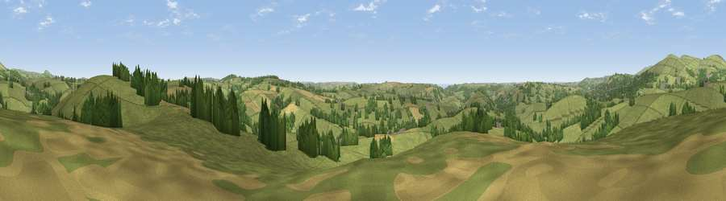

Viewpoint near Ugborough
#17286 in England · top 38% of its area beats it · near UgboroughWhere it is
The exact computed spot (SX 67175 54275). Click the marker for map links.
The view, rendered

A 360° render of this exact spot computed from the terrain model, tree cover and land cover — summer colours, afternoon light, calibrated against photographs of famous viewpoints. Real trees, hedges and buildings will differ in detail.
The panorama
Grey silhouette: terrain skyline in each direction (720 bearings, Earth curvature and refraction included). Dashed green: skyline with trees (+15 m) and buildings (+8 m) as obstacles. Blue strip: how far the ground is visible on each bearing.
Where the view opens
Wedge length = distance to the farthest visible ground on that bearing (vegetation-aware). Rings at 10, 25 and 50 km.
What fills the view
78% grassland · 14% woodland · 7% cropland ·
Angular shares of the visible panorama (visual magnitude), not map area. Landscape diversity 0.31 (0–1 Shannon).
Key numbers
More beautiful places nearby
The staircase of upgrades: each row has a higher view potential than everything closer. Driving times are estimates from straight-line distance, calibrated against real road routing — check an actual route before setting out.
| Place | Direction | Drive | Score |
|---|---|---|---|
| Western Beacon | NNW · 4 km | ~9 min | 81.9 |
| Viewpoint near Lee Moor | NW · 14 km | ~26 min | 82.7 |
| Viewpoint near Hope | S · 16 km | ~28 min | 84.4 |
| Viewpoint near East Prawle | SSE · 20 km | ~35 min | 84.6 |
| Pencarrow Head | W · 52 km | ~73 min | 86.0 |
| Viewpoint near Lesnewth | NW · 67 km | ~90 min | 87.7 |
| Viewpoint near Stenalees | W · 67 km | ~90 min | 88.0 |
| Viewpoint near Crackington Haven | NW · 67 km | ~90 min | 88.1 |
50.37334, -3.86923 · source: screening · position refined by local search. Computed location — check access rights before visiting.